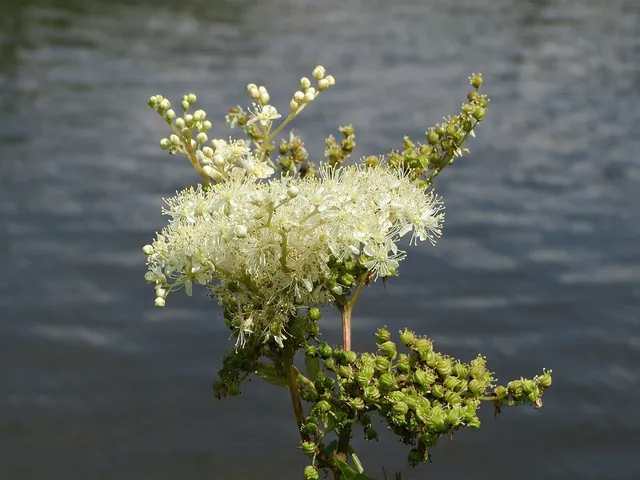

Edible flower or tea · Jul–Aug
Meadowsweet
Filipendula ulmaria
Also called Älggräs
Meadowsweet is a edible flower or tea you can forage from July to August across Sweden. Tall plant of damp meadows and ditches with frothy cream flower heads smelling of almond and honey.

Caution. Contains salicylates; avoid if allergic to aspirin.
When is meadowsweet in season in Sweden?
Meadowsweet is usually in season July to August. Timing shifts with weather, latitude and altitude.
Where does meadowsweet grow in Sweden?
Meadowsweet grows across Sweden. Regions: Götaland (south), Svealand (middle), Norrland (north).
How do you recognise meadowsweet?
Tall plant of damp meadows and ditches with frothy cream flower heads smelling of almond and honey.
How do you harvest meadowsweet?
Cut flower heads when just open on a dry day.
How do you eat meadowsweet?
Cordial, tea, panna cotta.
How do you store meadowsweet?
Dry flowers.